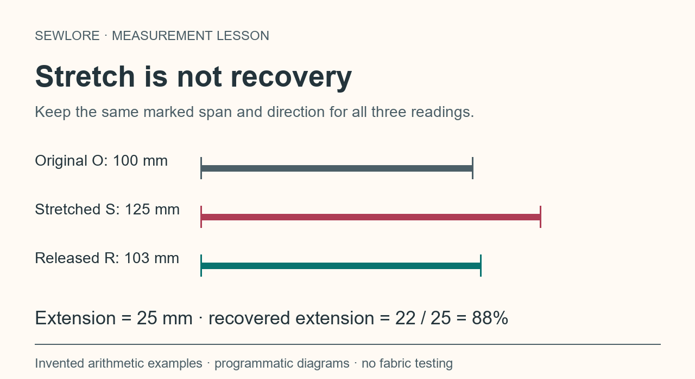
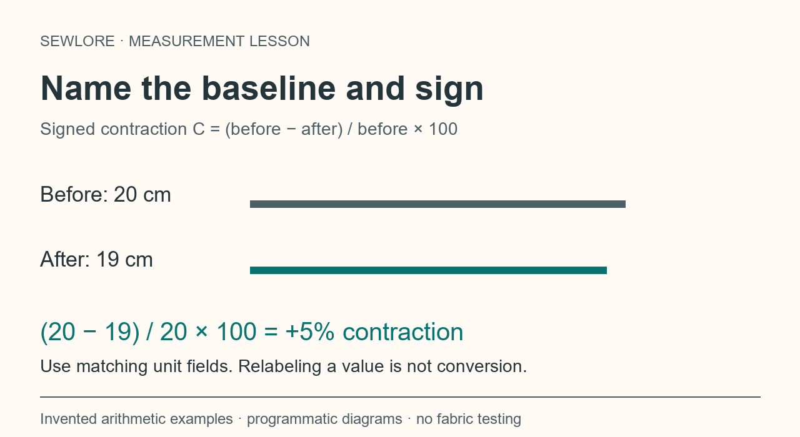
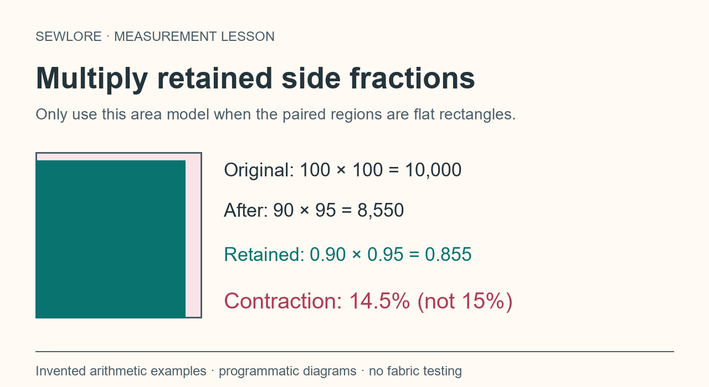

Read the complete lesson and all answer explanations
Before the numbers
A calculator can evaluate a ratio, but it cannot decide whether the readings describe the same thing. Start by naming the question: extension, paired care change, or rectangular area.
In this lesson you choose records and denominators, receive a reason for each choice, and can revisit a route. Every number is an invented arithmetic example. No fabric specimens, washing procedure or physical printer were tested for this lesson.
Keep the sample, marked endpoints, direction, unit, measurement condition and timing in your own record. The arithmetic does not prescribe force, release time, care settings or garment fit.
Reference: Sewlore Fabric Measurement Methods Guide.
Choose your question
What do you want to interpret?
- Stretch and recovery: a marked span before, during and after extension
You will choose comparable spans, distinguish denominators and handle zero extension.
- Paired care change: the same dimension before and after a recorded process
You will align units, interpret the sign and name the baseline.
- Rectangular area: two paired dimensions and an explicit shape assumption
You will check the shape assumption, multiply retained side fractions and interpret mixed signs.
Stretch readings refer to the same marked span

Stretch: choose comparable records
You want to calculate stretch and recovery. Which set of records answers that question?
- The same marked span and direction: O = 100 mm, S = 125 mm, R = 103 mm; extension method and release interval recorded
The three readings share endpoints, direction and unit. Retaining the method and timing lets the result be interpreted in the context of those readings.
- Original length of sample A, stretched length of sample B, and released width of sample A
Those entries change both the sample and direction. Their numerical ratio would not be the stretch comparison you intended.
- Any three positive lengths, because the calculator can accept positive numbers
Positive finite values are a software input requirement. You still have to establish matching sample, endpoints and direction.
Repair the comparison
Return to the original record before calculating. Identify one sample, one marked span and one direction. Retake or recover the missing comparable reading rather than inventing a value.
Record the extension method and the interval between release and the released reading. A percentage alone cannot supply that missing context.
Stretch: choose the recovery denominator
For O = 100 mm, S = 125 mm and R = 103 mm, 22 mm of the 25 mm extension has been recovered. What is the recovered-extension percentage?
- 88%: (125 − 103) / (125 − 100) × 100
22 / 25 × 100 = 88%. Stretch is 25% and residual growth is 3%, both relative to the original length. The 3% and 88% are not complementary percentages.
- 22%: (125 − 103) / 100 × 100
22 mm relative to the original 100 mm is not the fraction of the 25 mm extension recovered.
- 97%: subtract residual growth of 3% from 100%
Residual growth is relative to O; recovered extension is relative to S − O. Subtracting them from 100% mixes two different bases.
Separate the two bases
Write the denominators beside the calculations: stretch = (S − O) / O; residual growth = (R − O) / O; recovered extension = (S − R) / (S − O). Multiply each by 100 to express a percentage.
Here, O = 100 and S − O = 25. Check the question before choosing a denominator. Do not force the outputs to add to 100%.
Stretch: a zero denominator
Another invented record has O = 100 mm, S = 100 mm and R = 100 mm. How should recovered extension be reported?
- Undefined, because the entered extension S − O is zero
The entered stretch and residual growth are both 0%. The recovery fraction would divide by zero, so it has no numeric percentage.
- 100%, because the released length equals the original length
There was no entered extension to use as a base. R = O does not turn 0 / 0 into 100%.
- 0%, because no extension was entered
Zero stretch is a valid result; recovered extension remains undefined. Keep the distinction in the output.
Report an undefined fraction honestly
When S = O, the extension base is zero. Keep stretch and residual growth as their own results, and use a label such as undefined for recovered extension.
If an R reading falls below O or above S, check the record and preserve the signed calculation; do not silently clamp the value to 0–100%. Such a flag does not diagnose a fabric mechanism.
Stretch route: a useful record
Retain O, S and R in one unit with the sample, marked endpoints, direction, extension method and release interval. Keep the original readings; extra calculator digits do not create extra measuring accuracy.
The Sewlore stretch and recovery recording guide explains the recording context. The public sewing tools can evaluate a worked arithmetic example.
After stretch
Which route would you like to take next?
- Paired care change
This route uses a signed contraction convention and an explicit baseline.
- Rectangular area
This route checks whether a rectangle model is appropriate.
- Finish with the reference checklist
You can return to the route menu after the lesson.
Paired care readings need aligned units

Care: align the units first
A CSV record says before_length = 20 with before_unit = cm, and after_length = 190 with after_unit = mm. What should happen before interpretation?
- Convert explicitly, record matching units and validate the corrected record
20 cm is 200 mm, and 190 mm is 19 cm. Record either 200 / 190 mm or 20 / 19 cm with matching unit fields. The hosted validator rejects a mixed-unit row until it is corrected.
- Calculate (20 − 190) / 20 immediately; ratios always cancel units
Units cancel in a ratio only when the numbers represent the same unit. Using 20 and 190 unchanged would compare different scales.
- Change only after_unit from mm to cm and keep 190
190 mm is 19 cm. Changing its label without changing its value creates a different dimension.
Correct the numeric value and its unit together
Choose one supported unit for a row. One centimetre is 10 mm; one inch is 25.4 mm. Convert the value, update the unit and retain a trace of the change in your private working record.
A matching unit label is necessary, but it is not sufficient: the sample, direction and marked endpoints must also match.
Care: interpret a signed contraction
Using C = (before − after) / before × 100, an invented reading changes from 20 cm to 21 cm. Which statement is correct?
- C = −5%, meaning expansion under this stated convention
(20 − 21) / 20 × 100 = −5%. State the contraction convention when exporting or sharing the result.
- C = +5%, because every size change is positive shrinkage
The after reading is larger. Removing the sign would hide that expansion occurred in the entered dimensions.
- C = −4.762%, using 21 cm as the denominator
The stated definition uses the before reading of 20 cm. A different denominator produces a different percentage.
Keep the sign convention with the result
Positive signed contraction means an after reading is smaller; negative means it is larger. Zero means the entered paired dimensions are unchanged.
This arithmetic does not identify the physical cause, validate a care procedure or recommend care settings. Record the actual process and follow the applicable care label or manufacturer guidance.
Care: name the baseline across cycles
A hypothetical original length is 100 mm. A later reading is 96 mm, followed by 94 mm. Which entry clearly describes the last change?
- Cycle-to-cycle contraction: (96 − 94) / 96 × 100 ≈ 2.083%; cumulative contraction from 100 mm is 6%
The last 2 mm change is compared with 96 mm. The cumulative 6 mm difference is compared with the original 100 mm. Keep both labels explicit.
- The last cycle shrank 6%, because the final length is 94 mm
6% uses the original 100 mm baseline. It does not describe the change from the immediately preceding 96 mm reading.
- Add 4% and 2.083% and call the cumulative result 6.083%
Compute the cumulative change directly from 100 mm to 94 mm. Adding percentages with changing baselines is not equivalent.
Label the baseline, do not add unlike percentages
Write the baseline beside each value. Cumulative change compares the current reading with the original reading. Cycle-to-cycle change compares it with the prior reading.
For this invented sequence, retained fractions multiply: (96 / 100) × (94 / 96) = 94 / 100. The cumulative contraction is 6%.
Care route: validate before interpreting
Retain sample, marked endpoints, direction, units, actual care process, cycles and measurement timing. Use anonymous sample IDs and leave hosted free-text notes empty; private details belong in your own record.
The methods guide documents signs, row requirements and limits. The Fabric-Care CSV Validator diagnoses input records; accepted rows do not certify a textile procedure.
After care change
Which route would you like to take next?
- Stretch and recovery
This route separates original length and extension denominators.
- Rectangular area
This route checks the shape assumption before multiplying ratios.
- Finish with the reference checklist
You can restart and choose another route later.
Area uses a product of retained sides

Area: check the shape assumption
You have two measured spans on an irregular curved piece. Can their product establish its actual area?
- No. Calculate paired side changes, and leave rectangular area output omitted unless the relevant regions are flat rectangles
Two spans alone do not establish the actual area of an irregular or curved region. The validator omits area unless rectangle_assumption is yes.
- Yes. Multiplying any length and width always gives the true fabric area
L × W is the area of a rectangle. It does not generally describe an irregular region or a garment surface.
- Yes, if both values have enough decimal places
Numerical precision cannot turn an unsuitable rectangle assumption into a valid area model.
Keep side changes separate when the model does not fit
An axis percentage can be reported for a comparable marked span without claiming area. A rectangular-area result additionally needs the paired regions to represent flat rectangles.
Do not use body measurements or two arbitrary garment spans to assert garment surface area.
Area: calculate the product
For the invented flat rectangles 100 × 100 and 90 × 95, what is the signed area contraction?
- 14.5%: [1 − (90 / 100) × (95 / 100)] × 100
0.90 × 0.95 = 0.855 retained area. The contraction is 14.5%. Adding 10% and 5% double-counts the shared corner by 0.5 percentage points.
- 15%: 10% length contraction plus 5% width contraction
The side percentages do not directly add. Use CL + CW − CL × CW / 100, giving 10 + 5 − 0.5 = 14.5%.
- 85.5%, because 90 × 95 is 85.5% of 100 × 100
85.5% remains. The contraction is the difference from 100%, which is 14.5%. Label the quantity you report.
Distinguish retained area from area contraction
Retained fraction q = (after length / before length) × (after width / before width). Signed area contraction is (1 − q) × 100.
For 100 × 100 to 90 × 95, q = 0.855. Report 85.5% retained area or 14.5% contraction with the appropriate label.
Area: two opposite side changes
A hypothetical flat rectangle changes from 100 × 100 to 105 × 95. Length expands 5%, while width contracts 5%. What happens to the modelled area?
- It contracts 0.25%: 1.05 × 0.95 = 0.9975 retained fraction
105 × 95 = 9,975 compared with 10,000. The difference is 25 square units, or 0.25% of the original area.
- It is unchanged, because +5% and −5% cancel
The sides change together in the product. 1.05 × 0.95 is 0.9975, not 1.
- It expands 5%, because one side expands
Ignoring the width change omits part of the stated rectangle comparison.
Use the two ratios, including their signs
For opposite 5% side changes, the retained-area product is 1.05 × 0.95 = 0.9975. Under the contraction convention, (1 − 0.9975) × 100 = +0.25%.
Another invented comparison, 100 × 100 to 110 × 95, gives 1.045 retained fraction and −4.5% contraction, which means expansion. Preserve the sign rather than assuming every area change is shrinkage.
Area route: retain the assumption
Keep all four original readings, their unit, the paired directions, the relevant rectangular-shape assumption and the stated sign convention. Postpone display rounding until the arithmetic is complete.
The Sewlore methods guide includes the product identity and interpretation limits. The sewing tools let you inspect the arithmetic with your own non-sensitive example values.
After rectangular area
Which route would you like to take next?
- Stretch and recovery
The recovery denominator is extension, not original length.
- Paired care change
Align units and state the sign convention and baseline.
- Finish with the reference checklist
A completed route is a learning activity, not measurement certification.
Reference checklist and sources
Before sharing a result, keep the question, comparable readings, unit, denominator, sign convention, method context and any rectangle assumption with it. Preserve the original record and state display rounding separately.
The examples in this lesson are invented arithmetic inputs. They do not establish a textile test standard, a physical care outcome, garment fit, peer review or measurement accuracy.
Sewlore Fabric Measurement Methods Guide — formulas, input policy, references and limits.
Stretch and recovery recording context — what to retain beside O, S and R.
Sewlore Sewing Tools — interactive worked arithmetic.
Fabric-Care CSV Validator — anonymous record validation; read its policy before uploading.
Prepared for Sewlore with AI-assisted drafting, programmatic original diagrams and arithmetic checks. Original educational text and implementation: copyright © 2026 Sewlore where applicable; all rights reserved. H5P libraries retain their separate upstream licenses. No exclusive human authorship of algorithmic drawings is claimed.